Introduction to Exploratory Data Analysis (EDA)
Exploratory Data Analysis (EDA) is an approach to analyzing datasets to summarize their main characteristics, often using visual methods. It’s a critical step in any data analysis project, typically performed before formal modeling or hypothesis testing.
The Purpose of EDA
The main goals of EDA include:
- Understanding the data structure: Variables, data types, and dimensions
- Identifying patterns: Trends, relationships, and groupings
- Detecting anomalies: Outliers, errors, and missing values
- Testing assumptions: Checking for normality, homoscedasticity, etc.
- Formulating hypotheses: Generating questions for further investigation
- Informing modeling strategies: Selecting appropriate analysis methods
EDA is an iterative and interactive process. As you explore your data, new questions arise, leading to further exploration. It’s as much an art as it is a science.
The EDA Process
A typical EDA workflow includes:
- Data preparation: Cleaning, transforming, and organizing data
- Univariate analysis: Exploring individual variables
- Bivariate analysis: Exploring relationships between pairs of variables
- Multivariate analysis: Exploring relationships among multiple variables
- Summarizing findings: Drawing conclusions and planning next steps
Let’s start by loading and exploring a dataset:
# Load a built-in dataset
data(diamonds, package = "ggplot2")
# Take a sample for easier handling
set.seed(123)
diamonds_sample <- diamonds[sample(nrow(diamonds), 5000), ]
# First look at the data
str(diamonds_sample)## tibble [5,000 × 10] (S3: tbl_df/tbl/data.frame)
## $ carat : num [1:5000] 0.73 0.7 0.31 0.31 0.31 0.83 0.51 0.7 0.4 1.1 ...
## $ cut : Ord.factor w/ 5 levels "Fair"<"Good"<..: 5 5 5 5 5 2 3 2 5 3 ...
## $ color : Ord.factor w/ 7 levels "D"<"E"<"F"<"G"<..: 6 4 1 5 2 2 1 5 2 6 ...
## $ clarity: Ord.factor w/ 8 levels "I1"<"SI2"<"SI1"<..: 5 5 5 7 8 3 4 3 5 3 ...
## $ depth : num [1:5000] 60.7 60.8 61.6 62.2 60.9 63.7 62.5 64.2 61.6 61.2 ...
## $ table : num [1:5000] 56 56 55 56 55 59 58 58 56 61 ...
## $ price : int [1:5000] 2397 3300 713 707 987 3250 1668 1771 1053 4640 ...
## $ x : num [1:5000] 5.85 5.73 4.3 4.34 4.39 5.95 5.12 5.59 4.73 6.61 ...
## $ y : num [1:5000] 5.81 5.8 4.33 4.37 4.41 5.89 5.18 5.62 4.78 6.66 ...
## $ z : num [1:5000] 3.54 3.51 2.66 2.71 2.68 3.77 3.22 3.6 2.93 4.01 ...head(diamonds_sample)Data Preparation and Initial Exploration
Before diving into detailed analysis, it’s important to prepare and get a broad overview of your data.
Understanding Data Structure
Start by examining the basic structure of your dataset:
# Check dimensions
dim(diamonds_sample)## [1] 5000 10# Column names
names(diamonds_sample)## [1] "carat" "cut" "color" "clarity" "depth" "table" "price"
## [8] "x" "y" "z"# Data types
sapply(diamonds_sample, class)## $carat
## [1] "numeric"
##
## $cut
## [1] "ordered" "factor"
##
## $color
## [1] "ordered" "factor"
##
## $clarity
## [1] "ordered" "factor"
##
## $depth
## [1] "numeric"
##
## $table
## [1] "numeric"
##
## $price
## [1] "integer"
##
## $x
## [1] "numeric"
##
## $y
## [1] "numeric"
##
## $z
## [1] "numeric"# Summary statistics
summary(diamonds_sample)## carat cut color clarity depth
## Min. :0.2200 Fair : 139 D: 611 SI1 :1232 Min. :50.80
## 1st Qu.:0.4000 Good : 463 E: 895 VS2 :1116 1st Qu.:61.00
## Median :0.7100 Very Good:1130 F: 872 SI2 : 839 Median :61.85
## Mean :0.7984 Premium :1289 G:1080 VS1 : 777 Mean :61.75
## 3rd Qu.:1.0400 Ideal :1979 H: 798 VVS2 : 480 3rd Qu.:62.50
## Max. :3.0200 I: 484 VVS1 : 310 Max. :70.10
## J: 260 (Other): 246
## table price x y
## Min. :51.00 Min. : 335 Min. :0.000 Min. :0.000
## 1st Qu.:56.00 1st Qu.: 942 1st Qu.:4.700 1st Qu.:4.710
## Median :57.00 Median : 2428 Median :5.705 Median :5.720
## Mean :57.46 Mean : 3941 Mean :5.731 Mean :5.734
## 3rd Qu.:59.00 3rd Qu.: 5292 3rd Qu.:6.543 3rd Qu.:6.540
## Max. :79.00 Max. :18795 Max. :9.110 Max. :9.020
##
## z
## Min. :0.000
## 1st Qu.:2.900
## Median :3.530
## Mean :3.539
## 3rd Qu.:4.030
## Max. :5.910
## Checking for Missing Values
Missing values can significantly impact your analysis. It’s important to identify and address them early:
# Count missing values by column
sapply(diamonds_sample, function(x) sum(is.na(x)))## carat cut color clarity depth table price x y z
## 0 0 0 0 0 0 0 0 0 0# Visualize missing values (if there were any)
# This is just an example - diamonds dataset has no missing values
if (any(is.na(diamonds_sample))) {
missing_matrix <- is.na(diamonds_sample)
missing_count <- colSums(missing_matrix)
barplot(missing_count,
main = "Missing Values by Column",
ylab = "Count",
las = 2)
}Enhanced Data Summaries
The skimr package provides more comprehensive
summaries:
# Get enhanced summary with skimr
library(skimr)
skim(diamonds_sample)| Name | diamonds_sample |
| Number of rows | 5000 |
| Number of columns | 10 |
| _______________________ | |
| Column type frequency: | |
| factor | 3 |
| numeric | 7 |
| ________________________ | |
| Group variables | None |
Variable type: factor
| skim_variable | n_missing | complete_rate | ordered | n_unique | top_counts |
|---|---|---|---|---|---|
| cut | 0 | 1 | TRUE | 5 | Ide: 1979, Pre: 1289, Ver: 1130, Goo: 463 |
| color | 0 | 1 | TRUE | 7 | G: 1080, E: 895, F: 872, H: 798 |
| clarity | 0 | 1 | TRUE | 8 | SI1: 1232, VS2: 1116, SI2: 839, VS1: 777 |
Variable type: numeric
| skim_variable | n_missing | complete_rate | mean | sd | p0 | p25 | p50 | p75 | p100 | hist |
|---|---|---|---|---|---|---|---|---|---|---|
| carat | 0 | 1 | 0.80 | 0.47 | 0.22 | 0.40 | 0.71 | 1.04 | 3.02 | ▇▅▁▁▁ |
| depth | 0 | 1 | 61.75 | 1.40 | 50.80 | 61.00 | 61.85 | 62.50 | 70.10 | ▁▁▇▃▁ |
| table | 0 | 1 | 57.46 | 2.24 | 51.00 | 56.00 | 57.00 | 59.00 | 79.00 | ▅▇▁▁▁ |
| price | 0 | 1 | 3940.54 | 4019.95 | 335.00 | 942.00 | 2427.50 | 5292.00 | 18795.00 | ▇▂▁▁▁ |
| x | 0 | 1 | 5.73 | 1.12 | 0.00 | 4.70 | 5.70 | 6.54 | 9.11 | ▁▁▇▇▂ |
| y | 0 | 1 | 5.73 | 1.12 | 0.00 | 4.71 | 5.72 | 6.54 | 9.02 | ▁▁▇▇▂ |
| z | 0 | 1 | 3.54 | 0.70 | 0.00 | 2.90 | 3.53 | 4.03 | 5.91 | ▁▁▇▇▁ |
Exercise 1: Initial Data Exploration
For this exercise, we’ll use the mpg dataset from
ggplot2. Complete the following tasks:
- Load the
mpgdataset and examine its structure - Calculate the dimensions and get a summary of the dataset
- Check for missing values and report which columns (if any) have them
- Create a custom function called
data_reportthat takes a data frame and returns a list containing:- Number of rows and columns
- Column names and their data types
- Summary statistics for numeric columns only
- Count of missing values by column
- Apply your function to the
mpgdataset and print the results
# Write your code here# 1. Load the mpg dataset
data(mpg, package = "ggplot2")
# 2. Examine structure and dimensions
str(mpg)
dim(mpg)
summary(mpg)
# 3. Check for missing values
na_count <- sapply(mpg, function(x) sum(is.na(x)))
na_count
# 4. Create the data_report function
data_report <- function(df) {
# Check input
if (!is.data.frame(df)) {
stop("Input must be a data frame")
}
# Initialize result list
result <- list()
# Dimensions
result$dimensions <- c(rows = nrow(df), columns = ncol(df))
# Column names and types
result$columns <- sapply(df, class)
# Summary stats for numeric columns
numeric_cols <- sapply(df, is.numeric)
if (any(numeric_cols)) {
result$numeric_summary <- summary(df[, numeric_cols, drop = FALSE])
} else {
result$numeric_summary <- "No numeric columns found"
}
# Missing values count
result$missing_values <- sapply(df, function(x) sum(is.na(x)))
return(result)
}
# 5. Apply the function to mpg
report <- data_report(mpg)
print(report)Univariate Analysis
Univariate analysis focuses on exploring individual variables one at a time. The appropriate techniques depend on the variable type (categorical or numerical).
Categorical Variables
For categorical variables, frequency tables and bar charts are the primary tools:
# Count frequency of each cut type
table(diamonds_sample$cut)##
## Fair Good Very Good Premium Ideal
## 139 463 1130 1289 1979# Proportion table
prop.table(table(diamonds_sample$cut)) * 100##
## Fair Good Very Good Premium Ideal
## 2.78 9.26 22.60 25.78 39.58# Bar chart of cut distribution
ggplot(diamonds_sample, aes(x = cut)) +
geom_bar(fill = "steelblue") +
labs(title = "Distribution of Diamond Cuts",
x = "Cut Quality",
y = "Count") +
theme_minimal()# Bar chart with percentages
cut_counts <- diamonds_sample %>%
count(cut) %>%
mutate(percentage = n / sum(n) * 100)
ggplot(cut_counts, aes(x = cut, y = percentage)) +
geom_bar(stat = "identity", fill = "steelblue") +
geom_text(aes(label = sprintf("%.1f%%", percentage)),
vjust = -0.5) +
labs(title = "Percentage Distribution of Diamond Cuts",
x = "Cut Quality",
y = "Percentage") +
theme_minimal()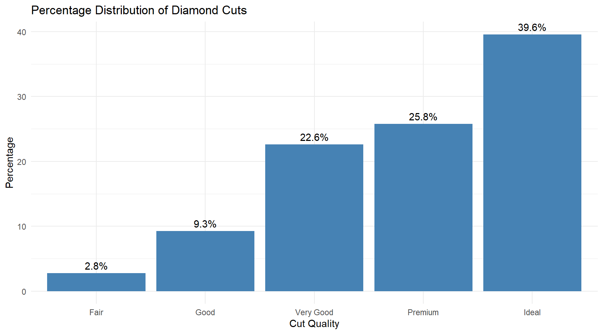
Numerical Variables
For numerical variables, summary statistics and distribution plots are key tools:
# Summary statistics for price
summary(diamonds_sample$price)## Min. 1st Qu. Median Mean 3rd Qu. Max.
## 335 942 2428 3941 5292 18795# Measures of central tendency
mean(diamonds_sample$price)## [1] 3940.537median(diamonds_sample$price)## [1] 2427.5# Measures of dispersion
sd(diamonds_sample$price)## [1] 4019.954IQR(diamonds_sample$price)## [1] 4350range(diamonds_sample$price)## [1] 335 18795# Histogram
ggplot(diamonds_sample, aes(x = price)) +
geom_histogram(bins = 30, fill = "steelblue", color = "black") +
labs(title = "Distribution of Diamond Prices",
x = "Price (USD)",
y = "Frequency") +
theme_minimal()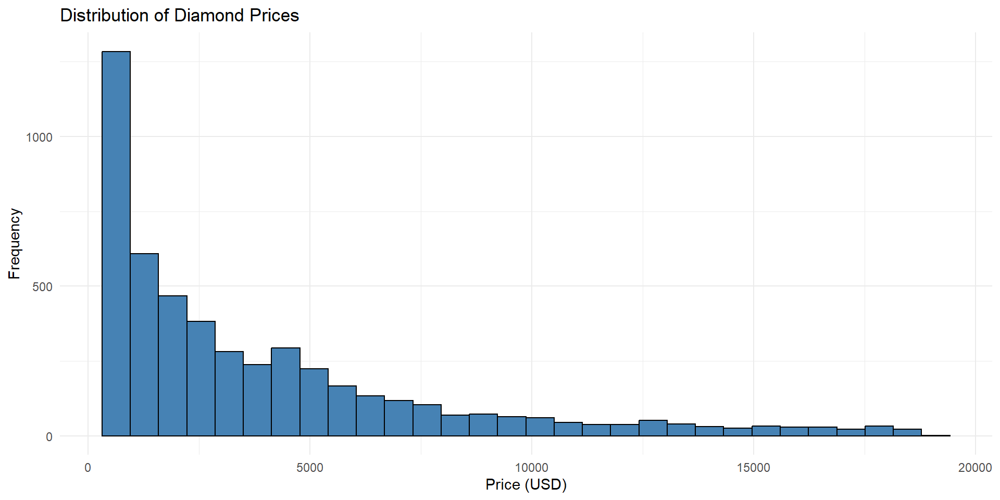
# Density plot
ggplot(diamonds_sample, aes(x = price)) +
geom_density(fill = "steelblue", alpha = 0.7) +
labs(title = "Density Plot of Diamond Prices",
x = "Price (USD)",
y = "Density") +
theme_minimal()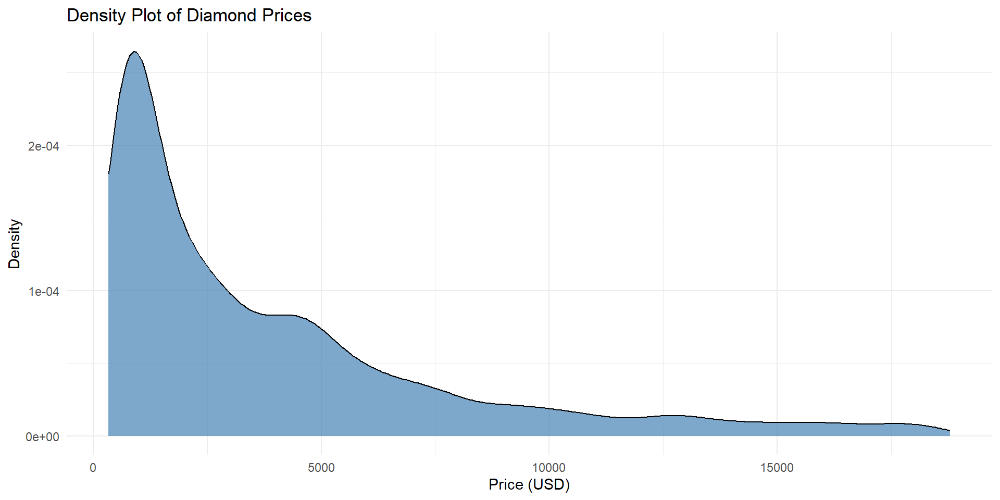
# Boxplot
ggplot(diamonds_sample, aes(y = price)) +
geom_boxplot(fill = "steelblue") +
labs(title = "Boxplot of Diamond Prices",
y = "Price (USD)") +
theme_minimal()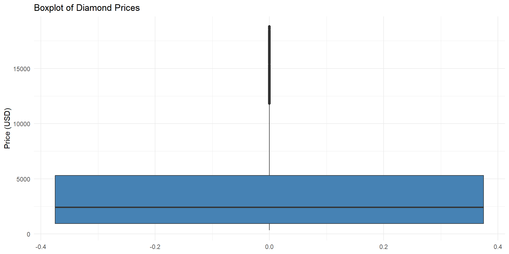
# QQ plot to check normality
qqnorm(diamonds_sample$price)
qqline(diamonds_sample$price, col = "red")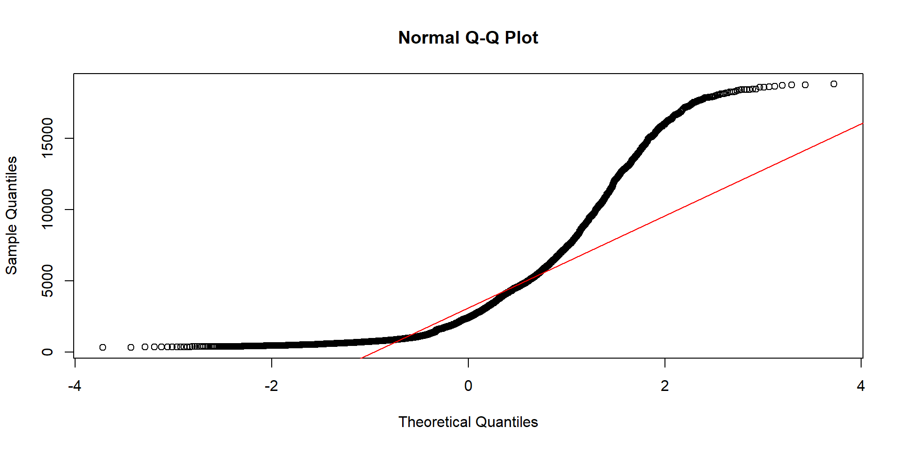
Data Transformations
When working with skewed data, transformations can be helpful:
# Set up a multi-panel plot
par(mfrow = c(2, 2))
# Original distribution
hist(diamonds_sample$price, main = "Original Price", xlab = "Price (USD)")
# Log transformation
hist(log(diamonds_sample$price), main = "Log Transformed", xlab = "Log(Price)")
# Square root transformation
hist(sqrt(diamonds_sample$price), main = "Square Root Transformed", xlab = "Sqrt(Price)")
# Inverse transformation
hist(1/diamonds_sample$price, main = "Inverse Transformed", xlab = "1/Price")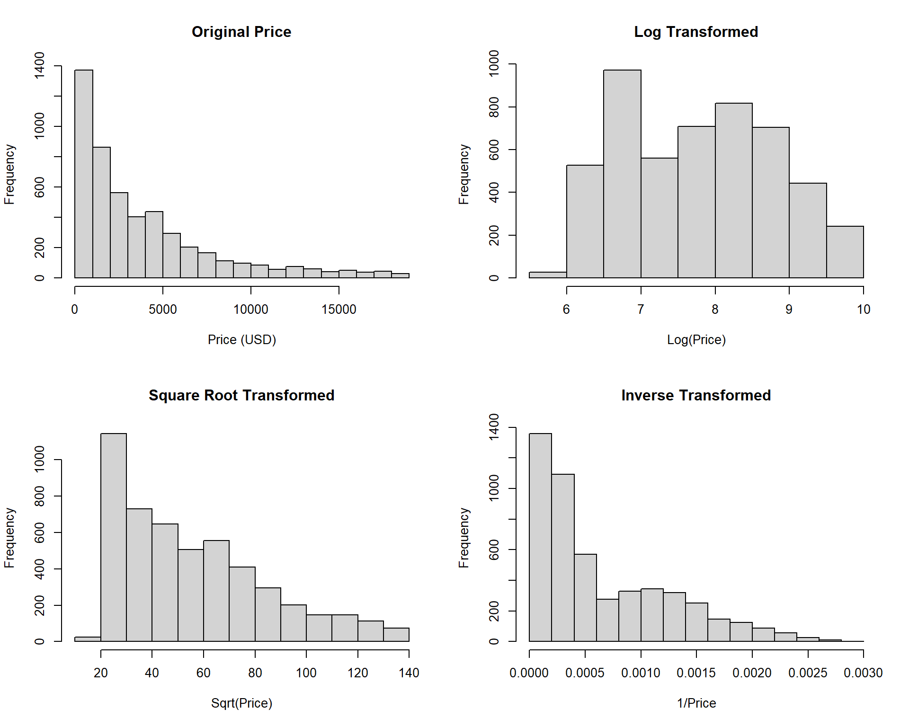
# Reset layout
par(mfrow = c(1, 1))
# Using ggplot2 for side-by-side comparison
diamonds_sample %>%
mutate(
log_price = log(price),
sqrt_price = sqrt(price)
) %>%
select(price, log_price, sqrt_price) %>%
pivot_longer(cols = everything(), names_to = "transformation", values_to = "value") %>%
ggplot(aes(x = value)) +
geom_density(fill = "steelblue", alpha = 0.7) +
facet_wrap(~ transformation, scales = "free") +
labs(title = "Comparison of Transformations",
x = "Value",
y = "Density") +
theme_minimal()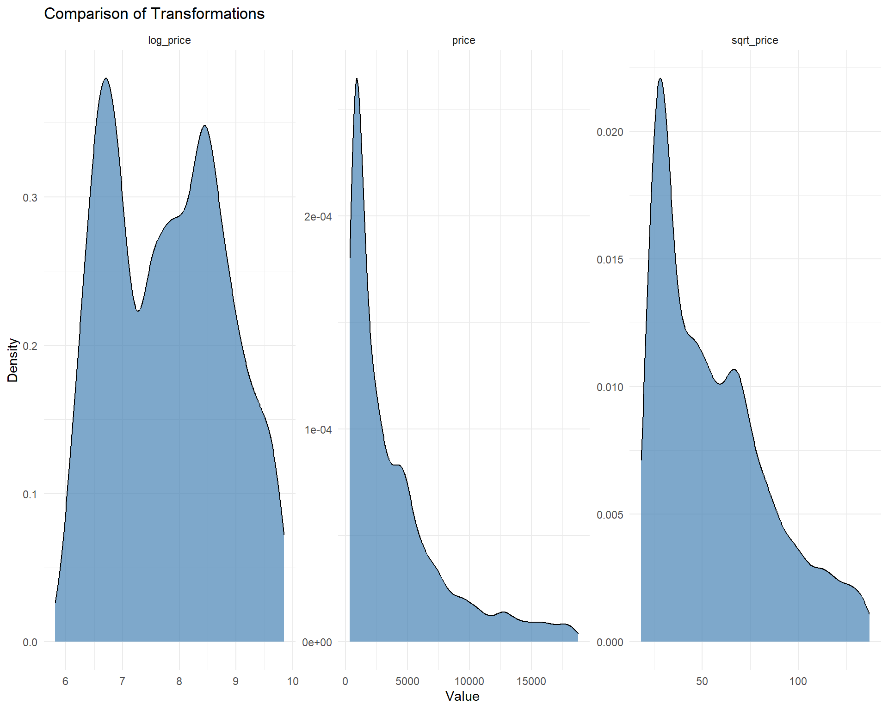
Exercise 2: Univariate Analysis
Using the mpg dataset from ggplot2, complete the
following tasks:
- Perform a univariate analysis of the
classvariable (vehicle type):- Create a frequency table showing counts and percentages
- Create a bar chart showing the distribution
- Identify the most and least common vehicle classes
- Perform a univariate analysis of the
hwyvariable (highway miles per gallon):- Calculate summary statistics (mean, median, sd, min, max, IQR)
- Create a histogram and a density plot
- Create a boxplot
- Determine if the distribution is skewed and in which direction
- Apply an appropriate transformation if needed
- Create a function called
analyze_variablethat:- Takes a data frame and a column name as input
- Automatically determines if the variable is categorical or numerical
- Performs an appropriate univariate analysis based on the type
- Returns a list with summary statistics and creates appropriate plots
# Write your code here# Load required packages
library(ggplot2)
library(dplyr)
# Load the mpg dataset
data(mpg, package = "ggplot2")
# 1. Univariate analysis of class (categorical)
# Frequency table
class_freq <- table(mpg$class)
print(class_freq)
# Percentage table
class_pct <- prop.table(class_freq) * 100
print(class_pct)
# Combined table
class_summary <- data.frame(
Count = as.numeric(class_freq),
Percentage = as.numeric(class_pct)
)
rownames(class_summary) <- names(class_freq)
print(class_summary)
# Bar chart
ggplot(mpg, aes(x = class)) +
geom_bar(fill = "steelblue") +
labs(title = "Distribution of Vehicle Classes",
x = "Vehicle Class",
y = "Count") +
theme_minimal() +
theme(axis.text.x = element_text(angle = 45, hjust = 1))
# Identify most and least common
most_common <- names(class_freq)[which.max(class_freq)]
least_common <- names(class_freq)[which.min(class_freq)]
cat("Most common vehicle class:", most_common, "\n")
cat("Least common vehicle class:", least_common, "\n")
# 2. Univariate analysis of hwy (numerical)
# Summary statistics
hwy_summary <- summary(mpg$hwy)
print(hwy_summary)
cat("Mean:", mean(mpg$hwy), "\n")
cat("Median:", median(mpg$hwy), "\n")
cat("Standard Deviation:", sd(mpg$hwy), "\n")
cat("Minimum:", min(mpg$hwy), "\n")
cat("Maximum:", max(mpg$hwy), "\n")
cat("IQR:", IQR(mpg$hwy), "\n")
# Histogram
ggplot(mpg, aes(x = hwy)) +
geom_histogram(bins = 15, fill = "steelblue", color = "black") +
labs(title = "Distribution of Highway MPG",
x = "Highway MPG",
y = "Frequency") +
theme_minimal()
# Density plot
ggplot(mpg, aes(x = hwy)) +
geom_density(fill = "steelblue", alpha = 0.7) +
labs(title = "Density Plot of Highway MPG",
x = "Highway MPG",
y = "Density") +
theme_minimal()
# Boxplot
ggplot(mpg, aes(y = hwy)) +
geom_boxplot(fill = "steelblue") +
labs(title = "Boxplot of Highway MPG",
y = "Highway MPG") +
theme_minimal()
# Check skewness
# Calculate skewness
skew <- function(x) {
n <- length(x)
m <- mean(x)
s <- sd(x)
sum((x - m)^3) / (n * s^3)
}
hwy_skewness <- skew(mpg$hwy)
cat("Skewness:", hwy_skewness, "\n")
if (hwy_skewness > 0.5) {
cat("The distribution is positively skewed (right-skewed)\n")
} else if (hwy_skewness < -0.5) {
cat("The distribution is negatively skewed (left-skewed)\n")
} else {
cat("The distribution is approximately symmetric\n")
}
# Apply transformation if needed
# Log transformation (if right-skewed)
if (hwy_skewness > 0.5) {
ggplot(mpg, aes(x = log(hwy))) +
geom_histogram(bins = 15, fill = "steelblue", color = "black") +
labs(title = "Log-Transformed Highway MPG",
x = "Log(Highway MPG)",
y = "Frequency") +
theme_minimal()
}
# 3. Create a function for univariate analysis
analyze_variable <- function(df, var_name) {
# Check if variable exists
if (!var_name %in% names(df)) {
stop(paste("Variable", var_name, "not found in the data frame"))
}
# Extract the variable
var <- df[[var_name]]
# Initialize result list
result <- list()
result$variable <- var_name
# Determine if categorical or numerical
if (is.factor(var) || is.character(var) || length(unique(var)) <= 10) {
# Categorical analysis
result$type <- "categorical"
# Frequency table
freq_table <- table(var)
pct_table <- prop.table(freq_table) * 100
result$frequencies <- freq_table
result$percentages <- pct_table
# Most and least common
result$most_common <- names(freq_table)[which.max(freq_table)]
result$least_common <- names(freq_table)[which.min(freq_table)]
# Bar chart
print(
ggplot(data.frame(var = var), aes(x = var)) +
geom_bar(fill = "steelblue") +
labs(title = paste("Distribution of", var_name),
x = var_name,
y = "Count") +
theme_minimal() +
theme(axis.text.x = element_text(angle = 45, hjust = 1))
)
} else {
# Numerical analysis
result$type <- "numerical"
# Summary statistics
result$summary <- summary(var)
result$mean <- mean(var)
result$median <- median(var)
result$sd <- sd(var)
result$min <- min(var)
result$max <- max(var)
result$IQR <- IQR(var)
# Skewness
result$skewness <- skew(var)
# Histogram
print(
ggplot(data.frame(var = var), aes(x = var)) +
geom_histogram(bins = 15, fill = "steelblue", color = "black") +
labs(title = paste("Distribution of", var_name),
x = var_name,
y = "Frequency") +
theme_minimal()
)
# Density plot
print(
ggplot(data.frame(var = var), aes(x = var)) +
geom_density(fill = "steelblue", alpha = 0.7) +
labs(title = paste("Density Plot of", var_name),
x = var_name,
y = "Density") +
theme_minimal()
)
# Boxplot
print(
ggplot(data.frame(var = var), aes(y = var)) +
geom_boxplot(fill = "steelblue") +
labs(title = paste("Boxplot of", var_name),
y = var_name) +
theme_minimal()
)
# Transformation if skewed
if (abs(result$skewness) > 0.5) {
if (result$skewness > 0.5 && min(var) >= 0) {
# Right-skewed, apply log transformation
var_transformed <- log(var + 1) # +1 to handle zeros
result$transformation <- "log"
} else if (result$skewness < -0.5) {
# Left-skewed, apply square transformation
var_transformed <- var^2
result$transformation <- "square"
}
if (exists("var_transformed")) {
result$transformed_summary <- summary(var_transformed)
result$transformed_skewness <- skew(var_transformed)
print(
ggplot(data.frame(var = var_transformed), aes(x = var)) +
geom_histogram(bins = 15, fill = "steelblue", color = "black") +
labs(title = paste("Transformed Distribution of", var_name),
x = paste(result$transformation, "(", var_name, ")"),
y = "Frequency") +
theme_minimal()
)
}
}
}
return(result)
}
# Apply the function
class_analysis <- analyze_variable(mpg, "class")
hwy_analysis <- analyze_variable(mpg, "hwy")
# Print results
print(class_analysis)
print(hwy_analysis)Bivariate Analysis
Bivariate analysis examines the relationship between two variables. The specific techniques depend on the types of variables being analyzed.
Categorical vs. Categorical
For two categorical variables, we use contingency tables and stacked/grouped bar charts:
# Contingency table
cut_clarity_table <- table(diamonds_sample$cut, diamonds_sample$clarity)
print(cut_clarity_table)##
## I1 SI2 SI1 VS2 VS1 VVS2 VVS1 IF
## Fair 25 35 32 18 20 8 1 0
## Good 10 110 150 90 59 24 14 6
## Very Good 8 200 314 235 165 103 80 25
## Premium 17 257 341 299 187 104 59 25
## Ideal 12 237 395 474 346 241 156 118# Row proportions
prop.table(cut_clarity_table, 1) * 100##
## I1 SI2 SI1 VS2 VS1 VVS2
## Fair 17.9856115 25.1798561 23.0215827 12.9496403 14.3884892 5.7553957
## Good 2.1598272 23.7580994 32.3974082 19.4384449 12.7429806 5.1835853
## Very Good 0.7079646 17.6991150 27.7876106 20.7964602 14.6017699 9.1150442
## Premium 1.3188518 19.9379364 26.4546160 23.1962762 14.5073701 8.0682700
## Ideal 0.6063669 11.9757453 19.9595755 23.9514907 17.4835776 12.1778676
##
## VVS1 IF
## Fair 0.7194245 0.0000000
## Good 3.0237581 1.2958963
## Very Good 7.0796460 2.2123894
## Premium 4.5771916 1.9394880
## Ideal 7.8827691 5.9626074# Column proportions
prop.table(cut_clarity_table, 2) * 100##
## I1 SI2 SI1 VS2 VS1 VVS2
## Fair 34.7222222 4.1716329 2.5974026 1.6129032 2.5740026 1.6666667
## Good 13.8888889 13.1108462 12.1753247 8.0645161 7.5933076 5.0000000
## Very Good 11.1111111 23.8379023 25.4870130 21.0573477 21.2355212 21.4583333
## Premium 23.6111111 30.6317044 27.6785714 26.7921147 24.0669241 21.6666667
## Ideal 16.6666667 28.2479142 32.0616883 42.4731183 44.5302445 50.2083333
##
## VVS1 IF
## Fair 0.3225806 0.0000000
## Good 4.5161290 3.4482759
## Very Good 25.8064516 14.3678161
## Premium 19.0322581 14.3678161
## Ideal 50.3225806 67.8160920# Chi-square test of independence
chi_test <- chisq.test(cut_clarity_table)## Warning in chisq.test(cut_clarity_table): Chi-squared approximation may be
## incorrectprint(chi_test)##
## Pearson's Chi-squared test
##
## data: cut_clarity_table
## X-squared = 508.91, df = 28, p-value < 2.2e-16# Stacked bar chart
ggplot(diamonds_sample, aes(x = cut, fill = clarity)) +
geom_bar(position = "stack") +
labs(title = "Cut Quality by Clarity",
x = "Cut",
y = "Count",
fill = "Clarity") +
theme_minimal() +
scale_fill_brewer(palette = "Set2")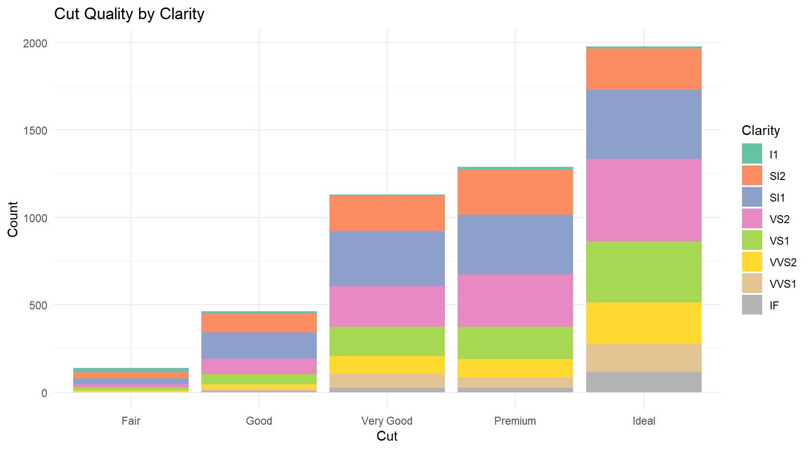
# Grouped bar chart
ggplot(diamonds_sample, aes(x = cut, fill = clarity)) +
geom_bar(position = "dodge") +
labs(title = "Cut Quality by Clarity",
x = "Cut",
y = "Count",
fill = "Clarity") +
theme_minimal() +
scale_fill_brewer(palette = "Set2")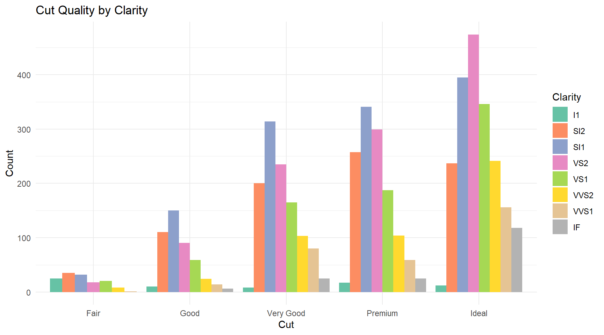
# Mosaic plot (using base R)
mosaicplot(cut_clarity_table, main = "Mosaic Plot of Cut by Clarity",
color = TRUE, las = 2)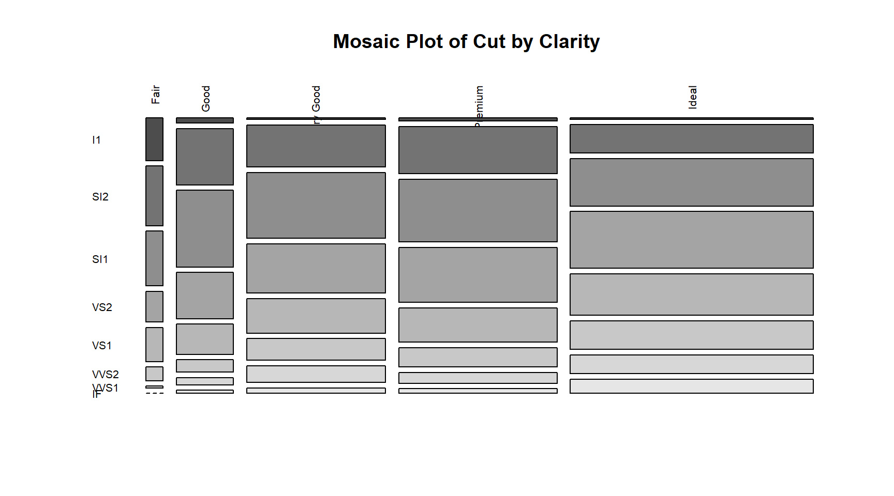
Numerical vs. Categorical
For a numerical variable against a categorical variable, grouped summary statistics, boxplots, and violin plots are useful:
# Summary statistics by group
diamonds_sample %>%
group_by(cut) %>%
summarize(
Mean_Price = mean(price),
Median_Price = median(price),
SD_Price = sd(price),
n = n()
)# ANOVA test
price_anova <- aov(price ~ cut, data = diamonds_sample)
summary(price_anova)## Df Sum Sq Mean Sq F value Pr(>F)
## cut 4 9.917e+08 247933441 15.52 1.27e-12 ***
## Residuals 4995 7.979e+10 15974427
## ---
## Signif. codes: 0 '***' 0.001 '**' 0.01 '*' 0.05 '.' 0.1 ' ' 1# Boxplot of price by cut
ggplot(diamonds_sample, aes(x = cut, y = price, fill = cut)) +
geom_boxplot() +
labs(title = "Diamond Price by Cut Quality",
x = "Cut",
y = "Price (USD)",
fill = "Cut") +
theme_minimal() +
theme(legend.position = "none")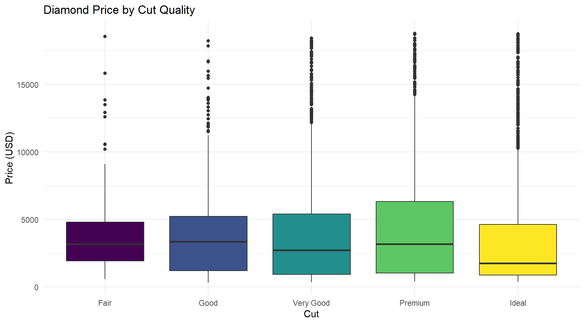
# Violin plot with jittered points
ggplot(diamonds_sample, aes(x = cut, y = price, fill = cut)) +
geom_violin(alpha = 0.7) +
geom_jitter(width = 0.2, size = 0.5, alpha = 0.5) +
labs(title = "Diamond Price Distribution by Cut Quality",
x = "Cut",
y = "Price (USD)",
fill = "Cut") +
theme_minimal() +
theme(legend.position = "none")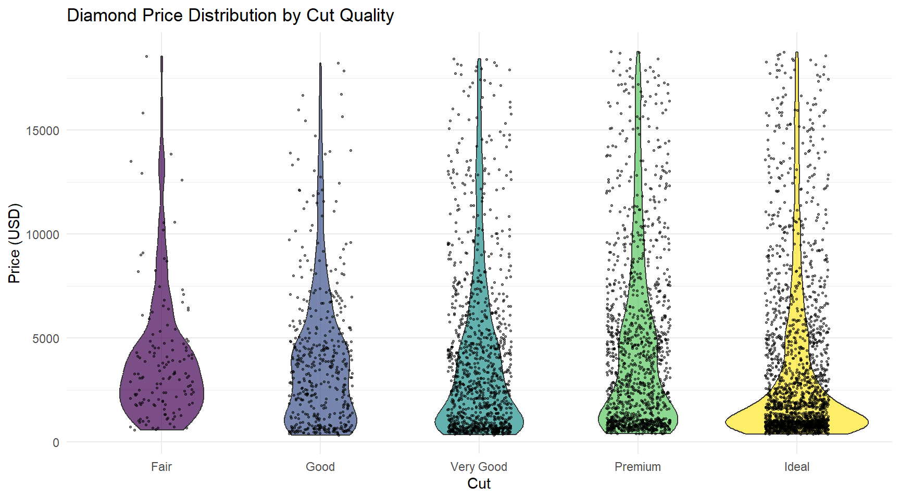
# Density plots by group
ggplot(diamonds_sample, aes(x = price, fill = cut)) +
geom_density(alpha = 0.5) +
labs(title = "Price Density by Cut Quality",
x = "Price (USD)",
y = "Density",
fill = "Cut") +
theme_minimal() +
scale_fill_brewer(palette = "Set1")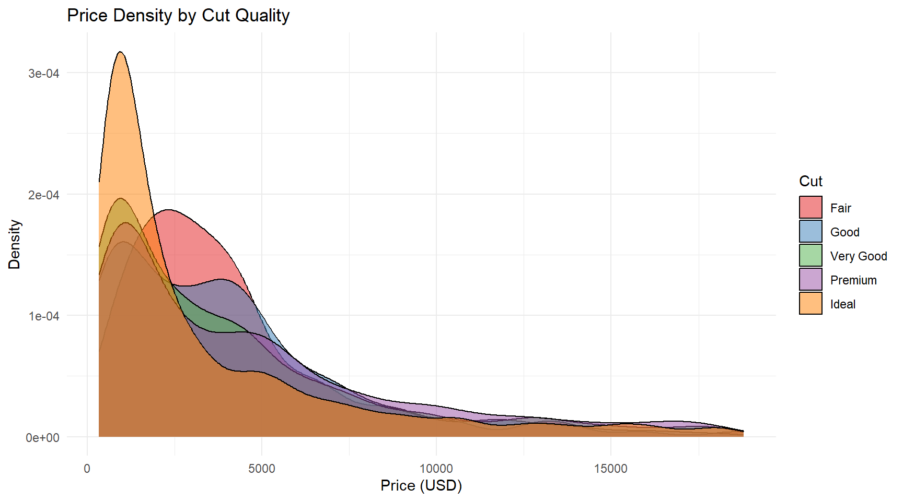
Numerical vs. Numerical
For two numerical variables, scatterplots, correlation analysis, and regression are the main tools:
# Scatterplot of carat vs. price
ggplot(diamonds_sample, aes(x = carat, y = price)) +
geom_point(alpha = 0.5) +
labs(title = "Diamond Price vs. Carat",
x = "Carat",
y = "Price (USD)") +
theme_minimal()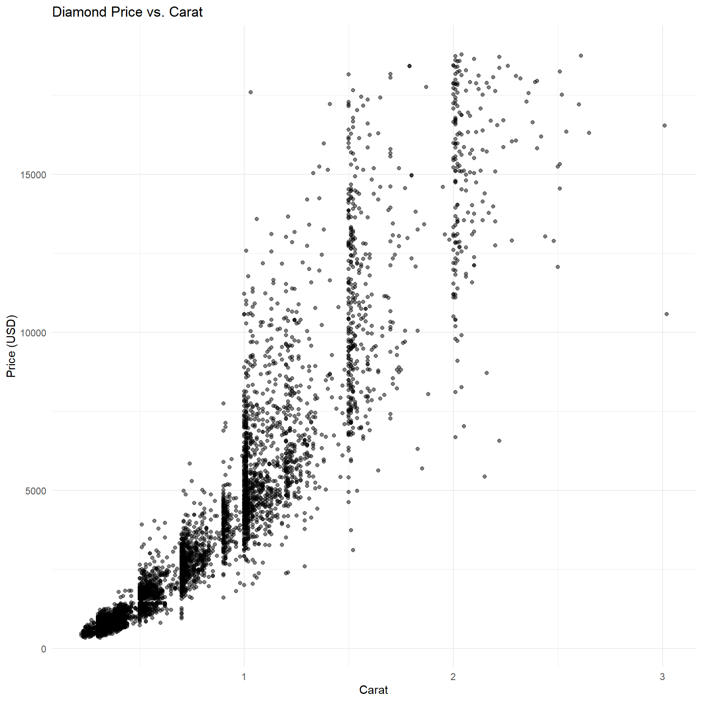
# Add a smoothing line
ggplot(diamonds_sample, aes(x = carat, y = price)) +
geom_point(alpha = 0.3) +
geom_smooth(method = "lm", color = "red") +
labs(title = "Diamond Price vs. Carat with Trend Line",
x = "Carat",
y = "Price (USD)") +
theme_minimal()## `geom_smooth()` using formula = 'y ~ x'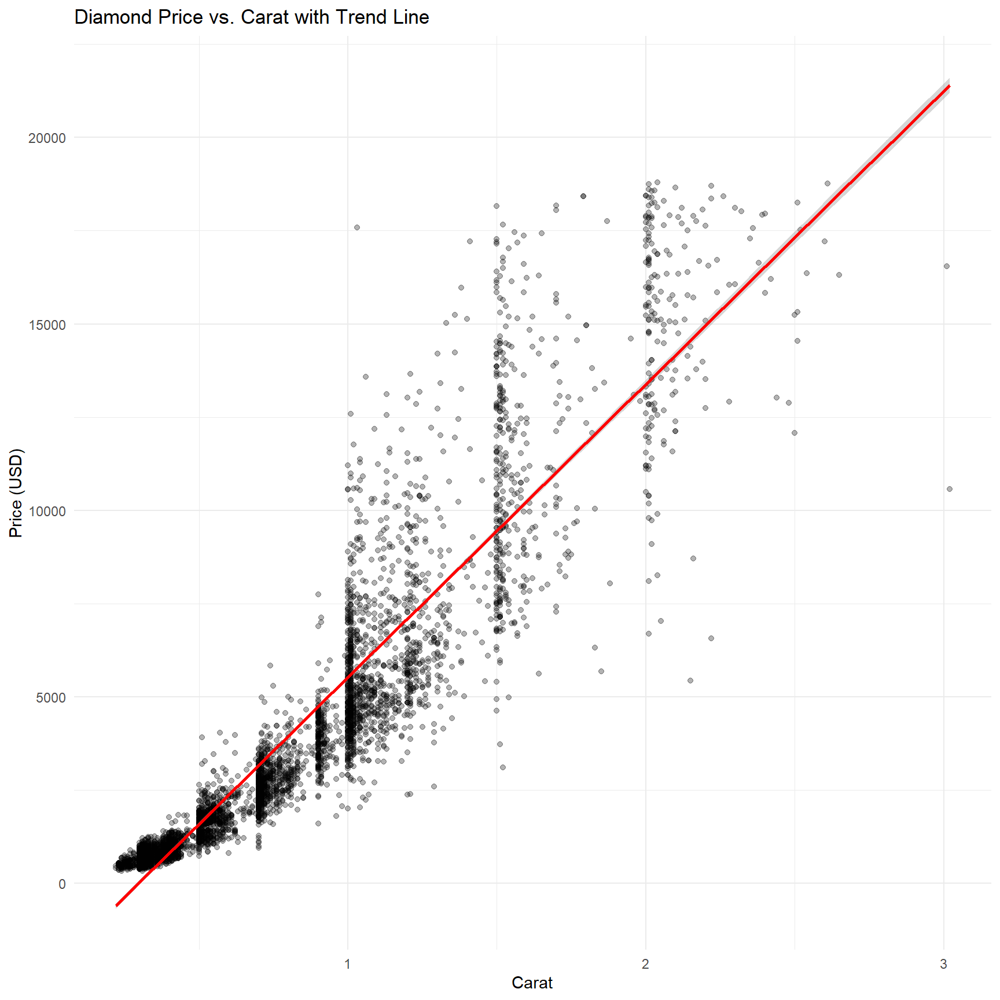
# Pearson correlation
cor_carat_price <- cor(diamonds_sample$carat, diamonds_sample$price)
cat("Correlation between carat and price:", cor_carat_price, "\n")## Correlation between carat and price: 0.9226618# Linear regression
model <- lm(price ~ carat, data = diamonds_sample)
summary(model)##
## Call:
## lm(formula = price ~ carat, data = diamonds_sample)
##
## Residuals:
## Min 1Q Median 3Q Max
## -10826.5 -855.3 -5.0 567.8 11829.2
##
## Coefficients:
## Estimate Std. Error t value Pr(>|t|)
## (Intercept) -2335.69 43.10 -54.2 <2e-16 ***
## carat 7860.65 46.47 169.2 <2e-16 ***
## ---
## Signif. codes: 0 '***' 0.001 '**' 0.01 '*' 0.05 '.' 0.1 ' ' 1
##
## Residual standard error: 1550 on 4998 degrees of freedom
## Multiple R-squared: 0.8513, Adjusted R-squared: 0.8513
## F-statistic: 2.861e+04 on 1 and 4998 DF, p-value: < 2.2e-16# Correlation matrix for numeric variables
numeric_diamonds <- diamonds_sample %>%
select(carat, depth, table, price, x, y, z)
cor_matrix <- cor(numeric_diamonds)
print(cor_matrix)## carat depth table price x y
## carat 1.00000000 0.02323936 0.1778273 0.92266177 0.97681096 0.97632763
## depth 0.02323936 1.00000000 -0.2808417 -0.01473493 -0.03110945 -0.03310688
## table 0.17782726 -0.28084173 1.0000000 0.12056092 0.19175380 0.18612722
## price 0.92266177 -0.01473493 0.1205609 1.00000000 0.88380860 0.88535767
## x 0.97681096 -0.03110945 0.1917538 0.88380860 1.00000000 0.99894339
## y 0.97632763 -0.03310688 0.1861272 0.88535767 0.99894339 1.00000000
## z 0.97301926 0.09244613 0.1530439 0.87719835 0.98865661 0.98848021
## z
## carat 0.97301926
## depth 0.09244613
## table 0.15304394
## price 0.87719835
## x 0.98865661
## y 0.98848021
## z 1.00000000# Visualize correlation matrix
corrplot(cor_matrix, method = "circle", type = "upper",
tl.col = "black", tl.srt = 45)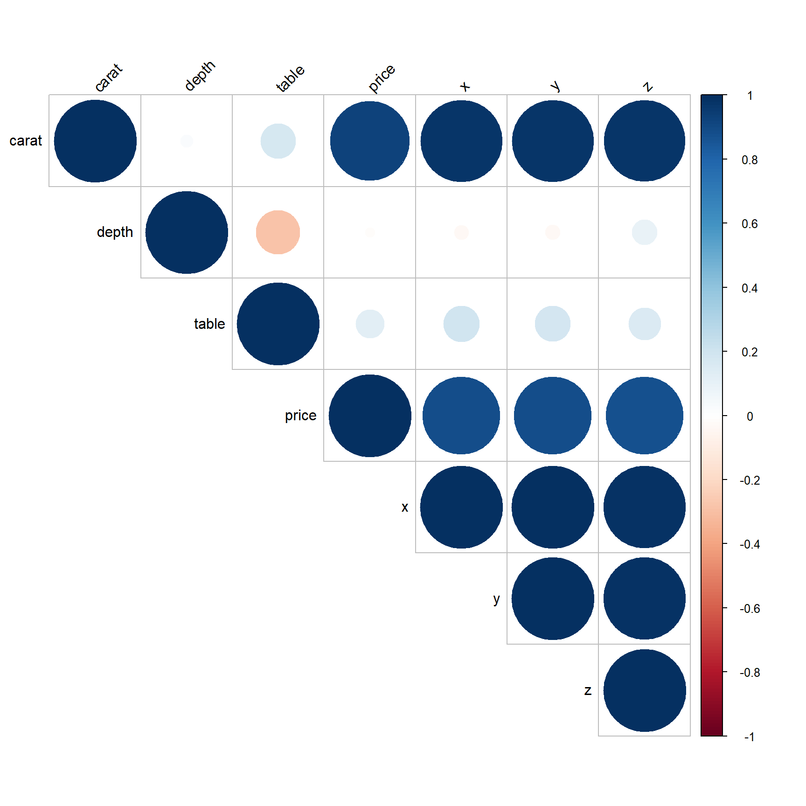
# Adding a third dimension with color
ggplot(diamonds_sample, aes(x = carat, y = price, color = cut)) +
geom_point(alpha = 0.6) +
labs(title = "Diamond Price vs. Carat by Cut",
x = "Carat",
y = "Price (USD)",
color = "Cut") +
theme_minimal() +
scale_color_brewer(palette = "Set1")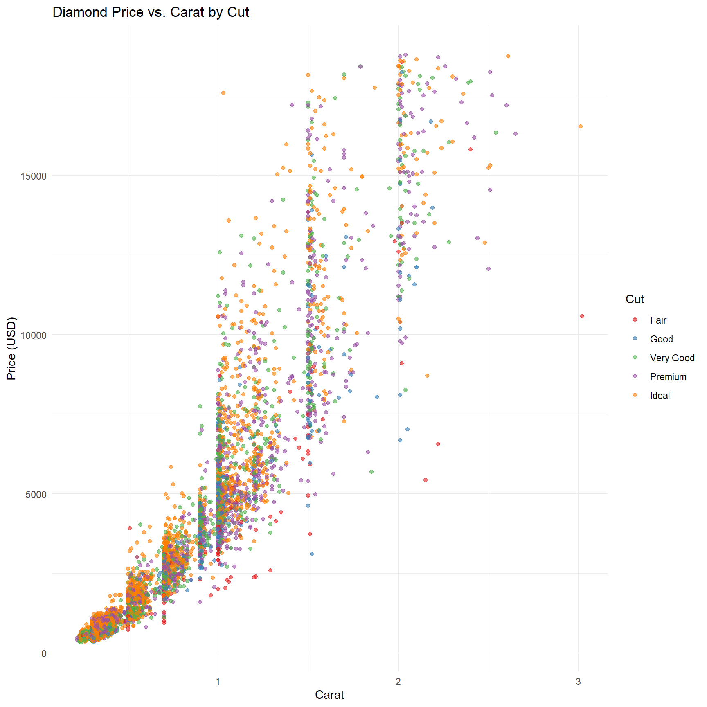
# Scatterplot matrix for numeric variables
pairs(numeric_diamonds[, 1:4],
main = "Scatterplot Matrix of Diamond Characteristics")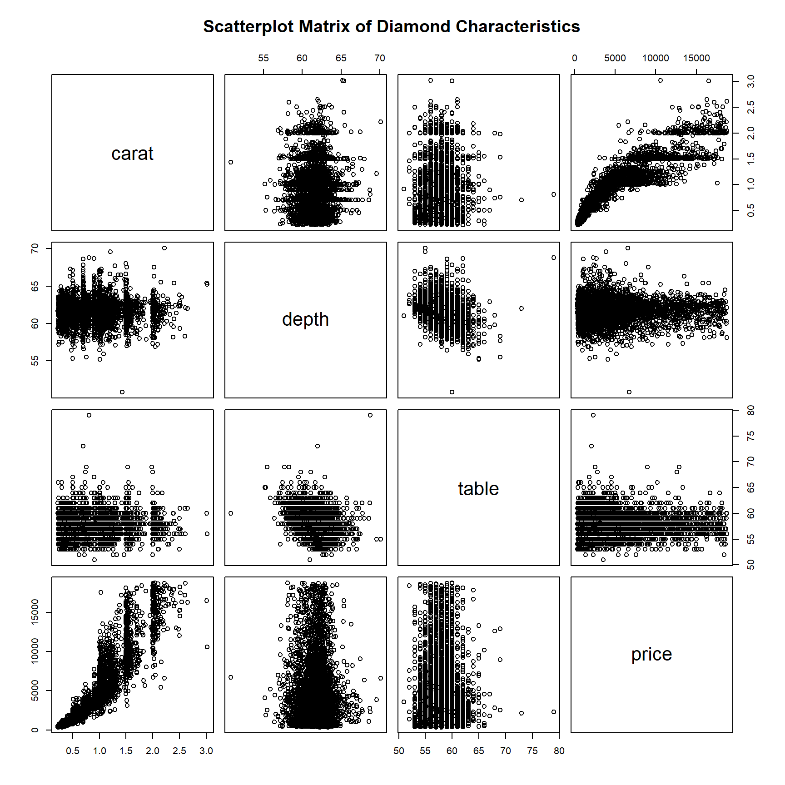
# Using GGally for enhanced pairs plot
library(GGally)
ggpairs(numeric_diamonds[, 1:4],
title = "Scatterplot Matrix with Correlations") 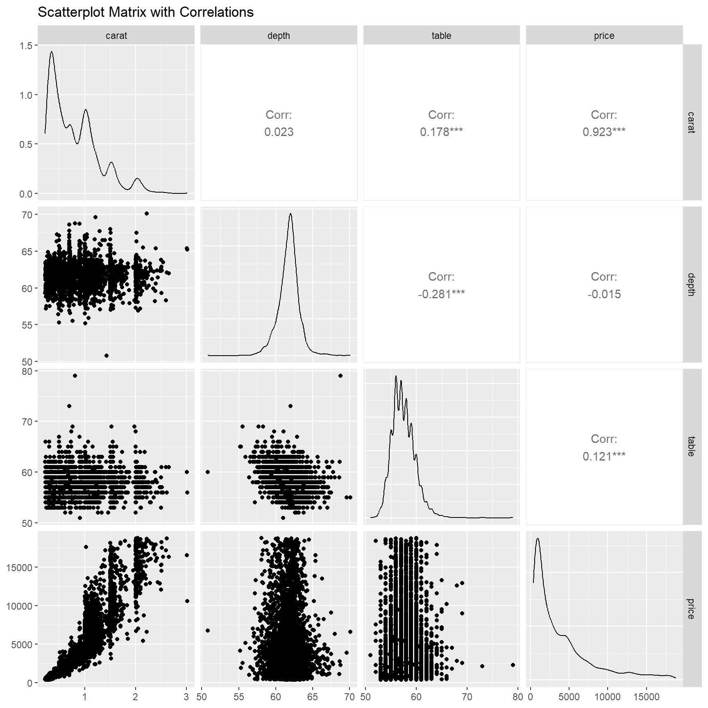
Exercise 3: Bivariate Analysis
Using the mpg dataset, perform the following bivariate
analyses:
- Analyze the relationship between
class(vehicle type) anddrv(drive train):- Create a contingency table with counts and proportions
- Create an appropriate visualization (stacked bar chart or mosaic plot)
- Perform a chi-square test and interpret the result
- Identify any notable patterns or associations
- Analyze the relationship between
class(vehicle type) andhwy(highway MPG):- Calculate summary statistics of
hwybyclass - Create boxplots and violin plots
- Perform an ANOVA test to determine if MPG differs significantly by class
- Identify which vehicle classes have the highest and lowest MPG
- Calculate summary statistics of
- Analyze the relationship between
displ(engine displacement) andhwy(highway MPG):- Create a scatterplot with a trend line
- Calculate the correlation coefficient
- Fit a linear regression model and interpret the results
- Enhance the scatterplot by coloring points by
class
- Create a function called
bivariate_analysisthat:- Takes a data frame and two column names as input
- Automatically determines the types of variables (categorical or numerical)
- Performs an appropriate bivariate analysis based on the variable types
- Returns a list of results and creates appropriate visualizations
# Write your code here# Load required packages
library(ggplot2)
library(dplyr)
library(GGally)
# Load the mpg dataset
data(mpg, package = "ggplot2")
# 1. Analyze relationship between class and drv (Categorical vs. Categorical)
# Contingency table
class_drv_table <- table(mpg$class, mpg$drv)
print(class_drv_table)
# Row proportions
class_drv_row_prop <- prop.table(class_drv_table, 1) * 100
print(class_drv_row_prop)
# Column proportions
class_drv_col_prop <- prop.table(class_drv_table, 2) * 100
print(class_drv_col_prop)
# Chi-square test
chi_test <- chisq.test(class_drv_table)
print(chi_test)
# Stacked bar chart
ggplot(mpg, aes(x = class, fill = drv)) +
geom_bar(position = "stack") +
labs(title = "Vehicle Class by Drive Train Type",
x = "Vehicle Class",
y = "Count",
fill = "Drive Train") +
theme_minimal() +
theme(axis.text.x = element_text(angle = 45, hjust = 1)) +
scale_fill_brewer(palette = "Set1",
labels = c("4-wheel", "Front-wheel", "Rear-wheel"))
# Mosaic plot
mosaicplot(class_drv_table, main = "Mosaic Plot of Class by Drive Train",
color = TRUE, las = 2)
# Notable patterns
# Look at which combinations are most/least common
class_drv_df <- as.data.frame.table(class_drv_table)
colnames(class_drv_df) <- c("Class", "DriveType", "Count")
class_drv_df <- class_drv_df %>% arrange(desc(Count))
head(class_drv_df, 5) # Top 5 combinations
tail(class_drv_df, 5) # Bottom 5 combinations
# 2. Analyze relationship between class and hwy (Categorical vs. Numerical)
# Summary statistics by group
class_hwy_summary <- mpg %>%
group_by(class) %>%
summarize(
Mean_MPG = mean(hwy),
Median_MPG = median(hwy),
SD_MPG = sd(hwy),
Min_MPG = min(hwy),
Max_MPG = max(hwy),
n = n()
) %>%
arrange(desc(Mean_MPG))
print(class_hwy_summary)
# Highest and lowest MPG classes
highest_mpg_class <- class_hwy_summary$class[1]
lowest_mpg_class <- class_hwy_summary$class[nrow(class_hwy_summary)]
cat("Class with highest MPG:", highest_mpg_class, "\n")
cat("Class with lowest MPG:", lowest_mpg_class, "\n")
# ANOVA test
hwy_anova <- aov(hwy ~ class, data = mpg)
summary(hwy_anova)
# Tukey's HSD post-hoc test
tukey_result <- TukeyHSD(hwy_anova)
print(tukey_result)
# Boxplot
ggplot(mpg, aes(x = class, y = hwy, fill = class)) +
geom_boxplot() +
labs(title = "Highway MPG by Vehicle Class",
x = "Vehicle Class",
y = "Highway MPG",
fill = "Vehicle Class") +
theme_minimal() +
theme(axis.text.x = element_text(angle = 45, hjust = 1),
legend.position = "none")
# Violin plot with jittered points
ggplot(mpg, aes(x = class, y = hwy, fill = class)) +
geom_violin(alpha = 0.7) +
geom_jitter(width = 0.2, size = 1, alpha = 0.5) +
labs(title = "Highway MPG Distribution by Vehicle Class",
x = "Vehicle Class",
y = "Highway MPG",
fill = "Vehicle Class") +
theme_minimal() +
theme(axis.text.x = element_text(angle = 45, hjust = 1),
legend.position = "none")
# 3. Analyze relationship between displ and hwy (Numerical vs. Numerical)
# Scatterplot with trend line
ggplot(mpg, aes(x = displ, y = hwy)) +
geom_point(alpha = 0.6) +
geom_smooth(method = "lm", color = "red") +
labs(title = "Highway MPG vs. Engine Displacement",
x = "Engine Displacement (L)",
y = "Highway MPG") +
theme_minimal()
# Correlation coefficient
cor_displ_hwy <- cor(mpg$displ, mpg$hwy)
cat("Correlation between displacement and highway MPG:", cor_displ_hwy, "\n")
# Linear regression
model <- lm(hwy ~ displ, data = mpg)
summary(model)
# Enhanced scatterplot with class colors
ggplot(mpg, aes(x = displ, y = hwy, color = class)) +
geom_point(alpha = 0.8) +
geom_smooth(method = "lm", se = FALSE, color = "black") +
labs(title = "Highway MPG vs. Engine Displacement by Vehicle Class",
x = "Engine Displacement (L)",
y = "Highway MPG",
color = "Vehicle Class") +
theme_minimal() +
scale_color_brewer(palette = "Set1")
# 4. Create a function for bivariate analysis
bivariate_analysis <- function(df, var1, var2) {
# Check if variables exist
if (!var1 %in% names(df) || !var2 %in% names(df)) {
stop("One or both variables not found in the data frame")
}
# Extract variables
x <- df[[var1]]
y <- df[[var2]]
# Initialize result list
result <- list()
result$var1 <- var1
result$var2 <- var2
# Determine variable types
is_cat_x <- is.factor(x) || is.character(x) || length(unique(x)) <= 10
is_cat_y <- is.factor(y) || is.character(y) || length(unique(y)) <= 10
# Case 1: Both categorical
if (is_cat_x && is_cat_y) {
result$type <- "categorical-categorical"
# Contingency table
cont_table <- table(x, y)
result$contingency_table <- cont_table
# Chi-square test
result$chi_square_test <- chisq.test(cont_table)
# Visualization
print(
ggplot(df, aes(x = .data[[var1]], fill = .data[[var2]])) +
geom_bar(position = "dodge") +
labs(title = paste(var1, "vs.", var2),
x = var1,
y = "Count",
fill = var2) +
theme_minimal() +
theme(axis.text.x = element_text(angle = 45, hjust = 1))
)
# Mosaic plot
mosaicplot(cont_table, main = paste("Mosaic Plot of", var1, "by", var2),
color = TRUE, las = 2)
}
# Case 2: Categorical x, Numerical y
else if (is_cat_x && !is_cat_y) {
result$type <- "categorical-numerical"
# Summary statistics by group
result$summary <- df %>%
group_by(.data[[var1]]) %>%
summarize(
Mean = mean(.data[[var2]]),
Median = median(.data[[var2]]),
SD = sd(.data[[var2]]),
n = n()
)
# ANOVA
formula <- as.formula(paste(var2, "~", var1))
result$anova <- summary(aov(formula, data = df))
# Boxplot
print(
ggplot(df, aes(x = .data[[var1]], y = .data[[var2]], fill = .data[[var1]])) +
geom_boxplot() +
labs(title = paste(var2, "by", var1),
x = var1,
y = var2) +
theme_minimal() +
theme(axis.text.x = element_text(angle = 45, hjust = 1),
legend.position = "none")
)
# Violin plot
print(
ggplot(df, aes(x = .data[[var1]], y = .data[[var2]], fill = .data[[var1]])) +
geom_violin(alpha = 0.7) +
geom_jitter(width = 0.2, size = 0.5, alpha = 0.5) +
labs(title = paste("Distribution of", var2, "by", var1),
x = var1,
y = var2) +
theme_minimal() +
theme(axis.text.x = element_text(angle = 45, hjust = 1),
legend.position = "none")
)
}
# Case 3: Numerical x, Categorical y
else if (!is_cat_x && is_cat_y) {
result$type <- "numerical-categorical"
# This is basically the same as Case 2, but with variables swapped
result$summary <- df %>%
group_by(.data[[var2]]) %>%
summarize(
Mean = mean(.data[[var1]]),
Median = median(.data[[var1]]),
SD = sd(.data[[var1]]),
n = n()
)
# ANOVA
formula <- as.formula(paste(var1, "~", var2))
result$anova <- summary(aov(formula, data = df))
# Boxplot
print(
ggplot(df, aes(x = .data[[var2]], y = .data[[var1]], fill = .data[[var2]])) +
geom_boxplot() +
labs(title = paste(var1, "by", var2),
x = var2,
y = var1) +
theme_minimal() +
theme(axis.text.x = element_text(angle = 45, hjust = 1),
legend.position = "none")
)
}
# Case 4: Both numerical
else {
result$type <- "numerical-numerical"
# Correlation
result$correlation <- cor(x, y)
# Linear regression
formula <- as.formula(paste(var2, "~", var1))
result$regression <- summary(lm(formula, data = df))
# Scatterplot
print(
ggplot(df, aes(x = .data[[var1]], y = .data[[var2]])) +
geom_point(alpha = 0.6) +
geom_smooth(method = "lm", color = "red") +
labs(title = paste(var2, "vs.", var1),
x = var1,
y = var2) +
theme_minimal()
)
}
return(result)
}
# Apply the function to examples from each case
cat_cat_result <- bivariate_analysis(mpg, "class", "drv")
cat_num_result <- bivariate_analysis(mpg, "class", "hwy")
num_num_result <- bivariate_analysis(mpg, "displ", "hwy")
# Display results
print(cat_cat_result)
print(cat_num_result)
print(num_num_result)Multivariate Analysis
Multivariate analysis explores relationships among three or more variables simultaneously. This often builds on bivariate analysis techniques with additional dimensions.
Adding Dimensions to Visualizations
# Scatterplot with color and size
ggplot(diamonds_sample, aes(x = carat, y = price, color = cut, size = table)) +
geom_point(alpha = 0.6) +
labs(title = "Diamond Price vs. Carat by Cut and Table",
x = "Carat",
y = "Price (USD)",
color = "Cut",
size = "Table %") +
theme_minimal() +
scale_color_brewer(palette = "Set1")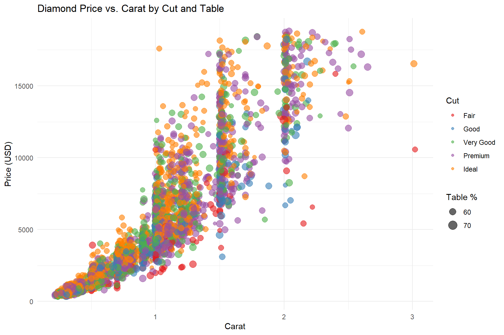
# Faceted visualization
ggplot(diamonds_sample, aes(x = carat, y = price, color = clarity)) +
geom_point(alpha = 0.5) +
geom_smooth(method = "lm", se = FALSE) +
facet_wrap(~ cut) +
labs(title = "Price vs. Carat by Cut and Clarity",
x = "Carat",
y = "Price (USD)",
color = "Clarity") +
theme_minimal() +
theme(legend.position = "bottom")## `geom_smooth()` using formula = 'y ~ x'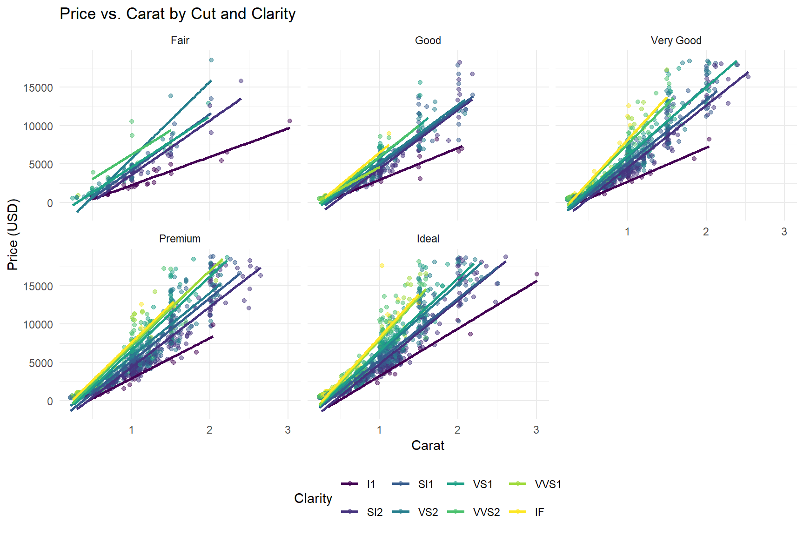
# Multiple small multiples
ggplot(diamonds_sample, aes(x = carat, y = price)) +
geom_point(alpha = 0.5) +
geom_smooth(method = "lm", se = FALSE, color = "red") +
facet_grid(cut ~ clarity) +
labs(title = "Price vs. Carat by Cut and Clarity",
x = "Carat",
y = "Price (USD)") +
theme_minimal() +
theme(axis.text.x = element_text(angle = 45, hjust = 1),
strip.text = element_text(size = 7))## `geom_smooth()` using formula = 'y ~ x'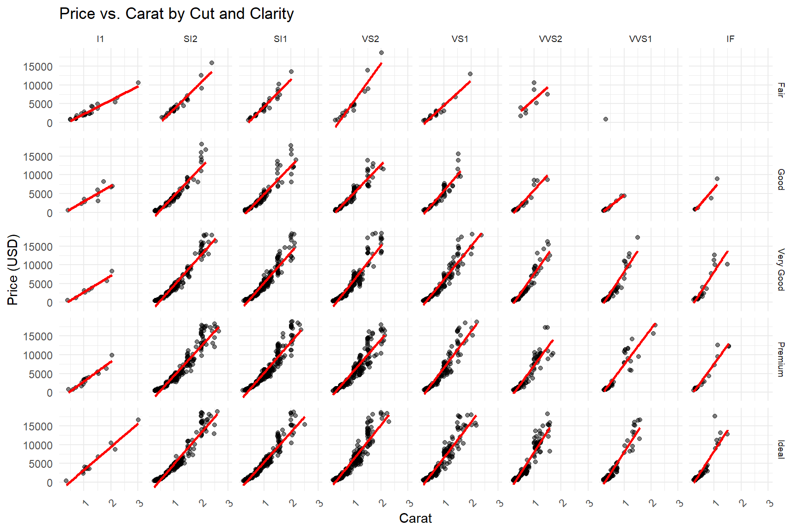
Building Multiple Regression Models
# Simple linear regression
simple_model <- lm(price ~ carat, data = diamonds_sample)
summary(simple_model)##
## Call:
## lm(formula = price ~ carat, data = diamonds_sample)
##
## Residuals:
## Min 1Q Median 3Q Max
## -10826.5 -855.3 -5.0 567.8 11829.2
##
## Coefficients:
## Estimate Std. Error t value Pr(>|t|)
## (Intercept) -2335.69 43.10 -54.2 <2e-16 ***
## carat 7860.65 46.47 169.2 <2e-16 ***
## ---
## Signif. codes: 0 '***' 0.001 '**' 0.01 '*' 0.05 '.' 0.1 ' ' 1
##
## Residual standard error: 1550 on 4998 degrees of freedom
## Multiple R-squared: 0.8513, Adjusted R-squared: 0.8513
## F-statistic: 2.861e+04 on 1 and 4998 DF, p-value: < 2.2e-16# Multiple regression
multi_model <- lm(price ~ carat + cut + color + clarity, data = diamonds_sample)
summary(multi_model)##
## Call:
## lm(formula = price ~ carat + cut + color + clarity, data = diamonds_sample)
##
## Residuals:
## Min 1Q Median 3Q Max
## -8009.8 -696.4 -215.6 460.8 9535.2
##
## Coefficients:
## Estimate Std. Error t value Pr(>|t|)
## (Intercept) -3771.70 45.87 -82.227 < 2e-16 ***
## carat 8989.10 39.87 225.436 < 2e-16 ***
## cut.L 740.22 70.05 10.567 < 2e-16 ***
## cut.Q -302.51 61.46 -4.922 8.83e-07 ***
## cut.C 163.52 51.97 3.146 0.00166 **
## cut^4 66.94 41.07 1.630 0.10317
## color.L -1994.07 59.00 -33.798 < 2e-16 ***
## color.Q -630.67 53.39 -11.813 < 2e-16 ***
## color.C -111.86 50.14 -2.231 0.02573 *
## color^4 80.58 46.14 1.746 0.08081 .
## color^5 -55.70 43.37 -1.284 0.19906
## color^6 -61.67 39.02 -1.581 0.11402
## clarity.L 3883.59 100.75 38.547 < 2e-16 ***
## clarity.Q -1708.42 93.77 -18.219 < 2e-16 ***
## clarity.C 577.81 80.85 7.147 1.02e-12 ***
## clarity^4 -355.66 65.57 -5.424 6.09e-08 ***
## clarity^5 156.63 53.78 2.912 0.00360 **
## clarity^6 -50.45 46.49 -1.085 0.27786
## clarity^7 129.44 40.77 3.175 0.00151 **
## ---
## Signif. codes: 0 '***' 0.001 '**' 0.01 '*' 0.05 '.' 0.1 ' ' 1
##
## Residual standard error: 1163 on 4981 degrees of freedom
## Multiple R-squared: 0.9165, Adjusted R-squared: 0.9162
## F-statistic: 3039 on 18 and 4981 DF, p-value: < 2.2e-16# Compare models
cat("Simple model R-squared:", summary(simple_model)$r.squared, "\n")## Simple model R-squared: 0.8513047cat("Multiple model R-squared:", summary(multi_model)$r.squared, "\n")## Multiple model R-squared: 0.9165442# ANOVA comparing models
anova(simple_model, multi_model)# Visualization of effects (partial residual plot)
if (requireNamespace("car", quietly = TRUE)) {
library(car)
crPlots(multi_model, terms = ~ carat)
}## Warning: package 'car' was built under R version 4.4.3## Loading required package: carData##
## Attaching package: 'car'## The following object is masked from 'package:dplyr':
##
## recode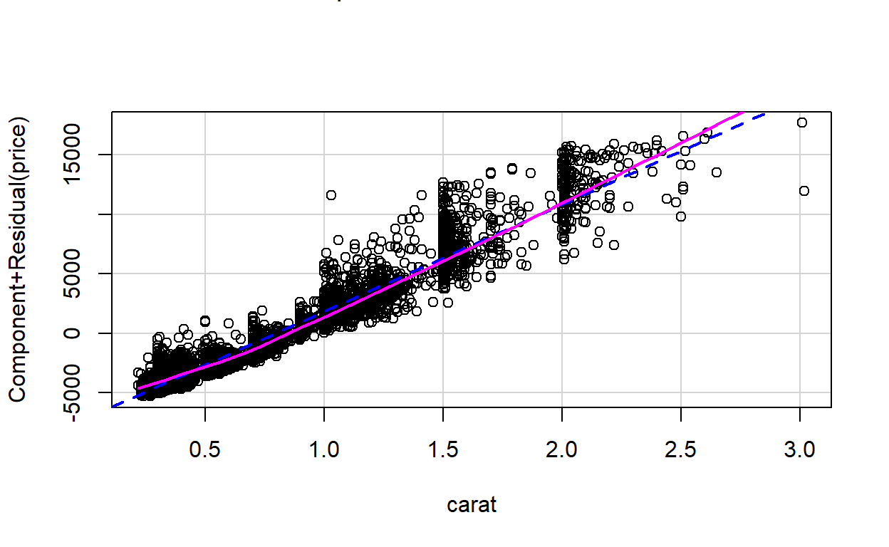
Clustering and Dimension Reduction
These techniques help identify patterns in high-dimensional data:
# Prepare data for clustering
diamonds_numeric <- diamonds_sample %>%
select(carat, depth, table, price, x, y, z) %>%
scale() # Standardize variables
# K-means clustering
if (requireNamespace("cluster", quietly = TRUE)) {
library(cluster)
# Determine optimal number of clusters
set.seed(123)
wss <- numeric(10)
for (i in 1:10) {
wss[i] <- sum(kmeans(diamonds_numeric, centers = i)$withinss)
}
# Elbow plot
plot(1:10, wss, type = "b", pch = 19,
xlab = "Number of Clusters", ylab = "Within Sum of Squares",
main = "Elbow Method for Optimal k")
# K-means with optimal k (let's say k=3 based on elbow)
set.seed(123)
km <- kmeans(diamonds_numeric, centers = 3)
# Add cluster assignments back to original data
diamonds_sample$cluster <- factor(km$cluster)
# Visualize clusters
ggplot(diamonds_sample, aes(x = carat, y = price, color = cluster)) +
geom_point(alpha = 0.6) +
labs(title = "Diamond Clusters based on Numeric Features",
x = "Carat",
y = "Price (USD)",
color = "Cluster") +
theme_minimal()
}## Warning: package 'cluster' was built under R version 4.4.3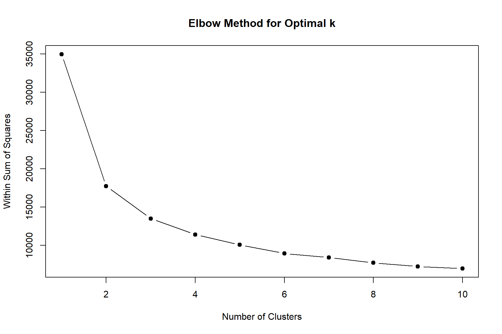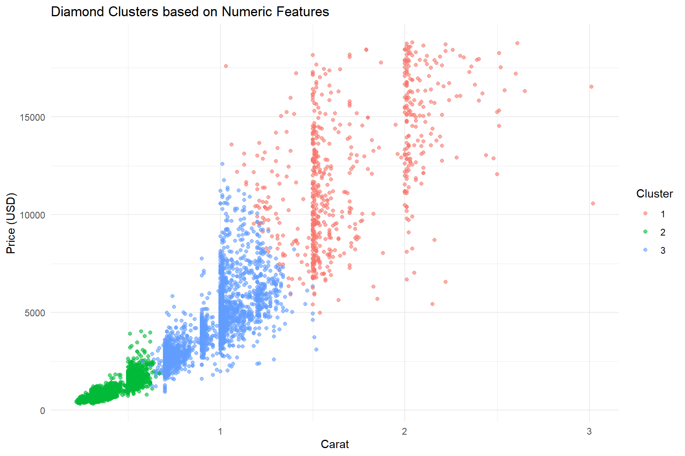
# PCA (Principal Component Analysis)
if (requireNamespace("stats", quietly = TRUE)) {
# Perform PCA
pca_result <- prcomp(diamonds_numeric)
# Summary of PCA
summary(pca_result)
# Visualize the first two principal components
pca_data <- as.data.frame(pca_result$x[, 1:2])
pca_data$cut <- diamonds_sample$cut
ggplot(pca_data, aes(x = PC1, y = PC2, color = cut)) +
geom_point(alpha = 0.6) +
labs(title = "PCA of Diamond Characteristics",
x = "Principal Component 1",
y = "Principal Component 2",
color = "Cut") +
theme_minimal()
}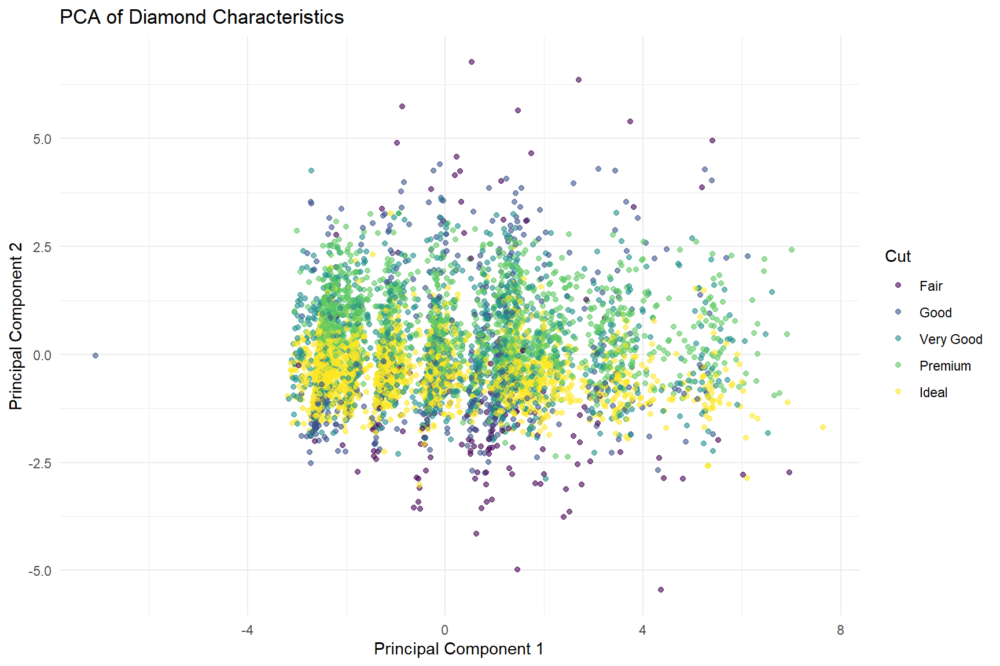
Exercise 4: Multivariate Analysis
Using the mpg dataset, perform a multivariate analysis
focusing on highway fuel efficiency (hwy). Complete the
following tasks:
- Create multivariate visualizations that show:
- The relationship between
displ(engine displacement) andhwy(highway MPG), with points colored byclassand sized bycyl(number of cylinders) - The same relationship faceted by
drv(drive train) - A grid of small multiples showing the relationship by combinations
of
drvandyear
- The relationship between
- Build regression models to predict
hwy:- A simple model using only
displ - A multiple regression model using
displ,cyl,class, anddrv - Compare the models using R-squared and ANOVA
- Interpret which variables have the strongest effect on fuel efficiency
- A simple model using only
- Perform a clustering analysis to identify vehicle groups:
- Use k-means clustering on the numerical variables
(
displ,cyl,cty,hwy) - Determine the optimal number of clusters
- Visualize the clusters in relation to
displandhwy - Characterize each cluster in terms of vehicle types
- Use k-means clustering on the numerical variables
(
- Put together a comprehensive EDA report that:
- Summarizes the key findings from your univariate, bivariate, and multivariate analyses
- Identifies the most important factors affecting highway fuel efficiency
- Provides actionable insights for someone looking to purchase a fuel-efficient vehicle
# Write your code here# Load required packages
library(ggplot2)
library(dplyr)
library(tidyr)
library(cluster)
# Load the mpg dataset
data(mpg, package = "ggplot2")
# 1. Create multivariate visualizations
# Relationship between displ and hwy, colored by class and sized by cyl
ggplot(mpg, aes(x = displ, y = hwy, color = class, size = cyl)) +
geom_point(alpha = 0.7) +
labs(title = "Highway MPG vs. Engine Displacement",
subtitle = "Colored by Vehicle Class, Sized by Cylinders",
x = "Engine Displacement (L)",
y = "Highway MPG",
color = "Vehicle Class",
size = "Cylinders") +
theme_minimal() +
scale_color_brewer(palette = "Set1")
# Same relationship faceted by drive train
ggplot(mpg, aes(x = displ, y = hwy, color = class)) +
geom_point(alpha = 0.7) +
geom_smooth(method = "lm", se = FALSE, color = "black") +
facet_wrap(~ drv, labeller = labeller(
drv = c("4" = "4-wheel", "f" = "Front-wheel", "r" = "Rear-wheel")
)) +
labs(title = "Highway MPG vs. Engine Displacement by Drive Train",
subtitle = "Colored by Vehicle Class",
x = "Engine Displacement (L)",
y = "Highway MPG",
color = "Vehicle Class") +
theme_minimal() +
scale_color_brewer(palette = "Set1")
# Grid of small multiples by drv and year
ggplot(mpg, aes(x = displ, y = hwy, color = class)) +
geom_point(alpha = 0.7) +
geom_smooth(method = "lm", se = FALSE, color = "black") +
facet_grid(drv ~ year, labeller = labeller(
drv = c("4" = "4-wheel", "f" = "Front-wheel", "r" = "Rear-wheel")
)) +
labs(title = "Highway MPG vs. Engine Displacement",
subtitle = "By Drive Train and Model Year",
x = "Engine Displacement (L)",
y = "Highway MPG",
color = "Vehicle Class") +
theme_minimal() +
theme(legend.position = "bottom") +
scale_color_brewer(palette = "Set1")
# 2. Build regression models
# Simple model
simple_model <- lm(hwy ~ displ, data = mpg)
summary(simple_model)
# Multiple regression model
multi_model <- lm(hwy ~ displ + cyl + class + drv, data = mpg)
summary(multi_model)
# Compare models using R-squared
simple_r2 <- summary(simple_model)$r.squared
multi_r2 <- summary(multi_model)$r.squared
cat("Simple model R-squared:", simple_r2, "\n")
cat("Multiple model R-squared:", multi_r2, "\n")
cat("Improvement:", (multi_r2 - simple_r2) * 100, "percentage points\n")
# ANOVA comparing models
anova_result <- anova(simple_model, multi_model)
print(anova_result)
# Interpret variable importance
coefficients <- summary(multi_model)$coefficients
# Sort coefficients by absolute t-value to assess importance
coef_importance <- data.frame(
Variable = rownames(coefficients),
Estimate = coefficients[, 1],
StdError = coefficients[, 2],
tValue = coefficients[, 3],
pValue = coefficients[, 4]
) %>%
filter(Variable != "(Intercept)") %>%
mutate(AbsTValue = abs(tValue)) %>%
arrange(desc(AbsTValue))
print(coef_importance)
# 3. Clustering analysis
# Prepare data for clustering
mpg_numeric <- mpg %>%
select(displ, cyl, cty, hwy) %>%
scale() # Standardize variables
# Determine optimal number of clusters
set.seed(123)
wss <- numeric(10)
for (i in 1:10) {
wss[i] <- sum(kmeans(mpg_numeric, centers = i)$withinss)
}
# Elbow plot
plot(1:10, wss, type = "b", pch = 19,
xlab = "Number of Clusters", ylab = "Within Sum of Squares",
main = "Elbow Method for Optimal k")
# Based on elbow plot, choose an optimal k (let's say 3)
set.seed(123)
k <- 3
km_result <- kmeans(mpg_numeric, centers = k)
# Add cluster assignments to original data
mpg_with_clusters <- mpg %>%
mutate(cluster = factor(km_result$cluster))
# Visualize clusters in relation to displ and hwy
ggplot(mpg_with_clusters, aes(x = displ, y = hwy, color = cluster)) +
geom_point(size = 3, alpha = 0.7) +
labs(title = "Vehicle Clusters based on Engine and Efficiency",
x = "Engine Displacement (L)",
y = "Highway MPG",
color = "Cluster") +
theme_minimal()
# Characterize clusters
cluster_profile <- mpg_with_clusters %>%
group_by(cluster) %>%
summarize(
Count = n(),
Avg_Displacement = mean(displ),
Avg_Cylinders = mean(cyl),
Avg_City_MPG = mean(cty),
Avg_Highway_MPG = mean(hwy)
)
print(cluster_profile)
# Distribution of vehicle classes within each cluster
class_by_cluster <- mpg_with_clusters %>%
group_by(cluster, class) %>%
summarize(Count = n(), .groups = "drop") %>%
group_by(cluster) %>%
mutate(Percentage = Count / sum(Count) * 100) %>%
arrange(cluster, desc(Percentage))
print(class_by_cluster)
# Visualize class distribution by cluster
ggplot(mpg_with_clusters, aes(x = cluster, fill = class)) +
geom_bar(position = "fill") +
labs(title = "Vehicle Class Distribution by Cluster",
x = "Cluster",
y = "Proportion",
fill = "Vehicle Class") +
theme_minimal() +
scale_fill_brewer(palette = "Set2")
# 4. Comprehensive EDA report
cat("\n============================================================\n")
cat(" COMPREHENSIVE EDA REPORT \n")
cat("============================================================\n\n")
cat("INTRODUCTION\n")
cat("This report analyzes the mpg dataset to identify factors affecting highway fuel efficiency.\n\n")
cat("KEY FINDINGS FROM UNIVARIATE ANALYSIS\n")
cat("- Highway MPG (hwy) has a mean of", mean(mpg$hwy), "and ranges from", min(mpg$hwy), "to", max(mpg$hwy), "\n")
cat("- The most common vehicle class is", names(which.max(table(mpg$class))), "\n")
cat("- Engine displacement (displ) ranges from", min(mpg$displ), "to", max(mpg$displ), "liters\n\n")
cat("KEY FINDINGS FROM BIVARIATE ANALYSIS\n")
cat("- Strong negative correlation between engine displacement and highway MPG:", cor(mpg$displ, mpg$hwy), "\n")
cat("- Vehicle class has a significant impact on MPG (ANOVA p-value < 0.001)\n")
cat("- Compact cars have the highest average MPG at", mean(mpg$hwy[mpg$class == "compact"]), "\n")
cat("- SUVs have the lowest average MPG at", mean(mpg$hwy[mpg$class == "suv"]), "\n\n")
cat("KEY FINDINGS FROM MULTIVARIATE ANALYSIS\n")
cat("- Multiple regression model explains", round(multi_r2 * 100, 1), "% of the variance in highway MPG\n")
cat("- The most important predictors of high MPG (in order) are:\n")
for(i in 1:min(5, nrow(coef_importance))) {
cat(" ", i, ". ", coef_importance$Variable[i],
" (t-value: ", round(coef_importance$tValue[i], 2), ")\n", sep = "")
}
cat("\n- We identified", k, "distinct vehicle clusters based on engine and efficiency metrics\n")
cat("- Cluster profiles:\n")
for(i in 1:nrow(cluster_profile)) {
cat(" Cluster", i, ": ", round(cluster_profile$Avg_Highway_MPG[i], 1), "MPG, ",
round(cluster_profile$Avg_Displacement[i], 1), "L engines\n", sep = "")
}
cat("\nACTIONABLE INSIGHTS FOR FUEL-EFFICIENT VEHICLE PURCHASE\n")
cat("1. Engine size matters most: Smaller engines (< 2.0L) consistently deliver better MPG\n")
cat("2. Vehicle class is critical: Compact and subcompact cars offer the best efficiency\n")
cat("3. Drive train affects efficiency: Front-wheel drive vehicles typically offer better MPG\n")
cat("4. Cylinder count: Fewer cylinders generally means better fuel economy\n")
cat("5. Recommendation: For maximum highway efficiency, look for 4-cylinder compact cars with\n")
cat(" small engines (<2.0L) and front-wheel drive\n")Exploratory Data Analysis Workflow
A structured EDA workflow helps ensure a thorough and systematic exploration of your data.
Step-by-Step EDA Process
Here’s a recommended EDA workflow:
- Define Questions: Start with clear questions you want to answer
- Data Preparation: Clean and structure your data for analysis
- Univariate Analysis: Understand individual variables
- Bivariate Analysis: Explore relationships between variables
- Multivariate Analysis: Investigate complex relationships
- Summarize Findings: Draw conclusions and generate insights
- Communicate Results: Create clear visualizations and reports
Iterative Nature of EDA
EDA is not a linear process but an iterative one:
## Warning: package 'DiagrammeR' was built under R version 4.4.3Common Pitfalls and Best Practices
Some tips for effective EDA:
- Don’t skip data cleaning: Missing values, outliers, and errors can lead to incorrect conclusions
- Balance exploration and focus: Explore broadly, but don’t lose sight of your key questions
- Use appropriate visualizations: Choose the right plots for your data types and questions
- Look beyond the obvious: Investigate unusual patterns and unexpected relationships
- Document your process: Keep track of your analyses and findings for reproducibility
- Be aware of biases: Consider sampling biases, measurement errors, and your own preconceptions
- Remember correlation isn’t causation: Identify relationships, but be cautious about inferring causality
Summary
In this module, you’ve learned about Exploratory Data Analysis (EDA) in R, covering:
- The EDA Process:
- Understanding the purpose and importance of EDA
- Following a structured workflow from univariate to multivariate analysis
- Iteratively exploring data to generate insights
- Univariate Analysis:
- Examining the distribution of individual variables
- Using appropriate techniques for categorical and numerical data
- Identifying patterns and anomalies in single variables
- Bivariate Analysis:
- Exploring relationships between pairs of variables
- Applying different techniques based on variable types
- Testing for statistical significance in relationships
- Multivariate Analysis:
- Investigating complex relationships among multiple variables
- Building predictive models to understand factors’ influences
- Using clustering to identify patterns in high-dimensional data
- Effective EDA Practices:
- Choosing appropriate visualizations
- Avoiding common pitfalls
- Communicating findings clearly
EDA is a crucial first step in any data analysis project, providing the foundation for more advanced statistical methods, machine learning, and data-driven decision making.